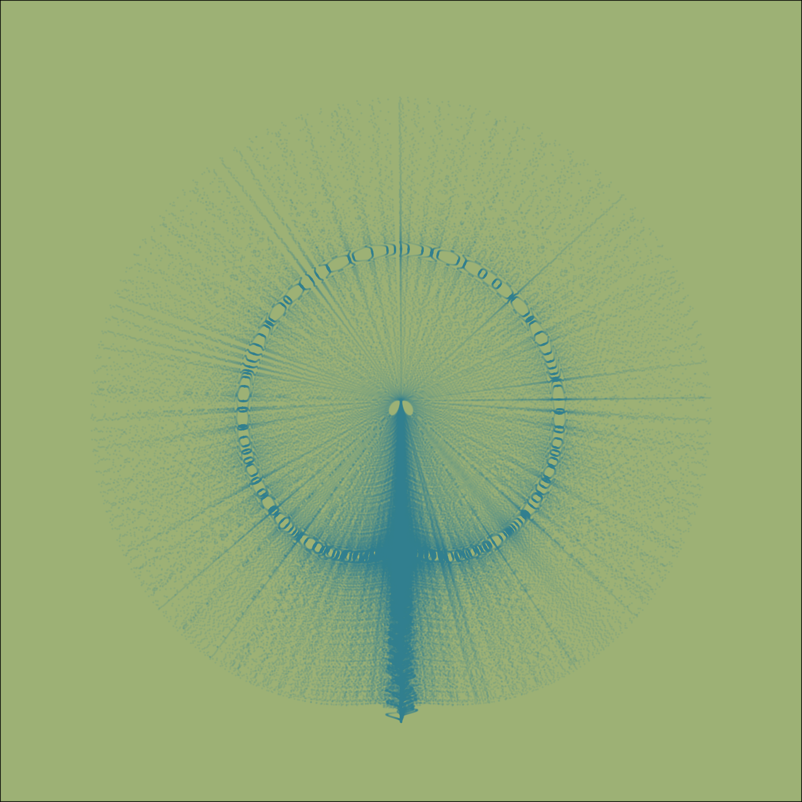

Learning to train the mind
Glimpsing through Meditation

I was first introduced to formal practice of meditation when I was in lower secondory school. After that there were many instances of following spiritual schools and gurus for the sake of learning how to meditate. It was never consistent and I was never consistent. In the past few months, I have been fairly consistent meditating just by myself. Without a teacher, however, learning the skill of meditation is not an easy task to undertake. After weighing the pros and cons, I decided to learn from a teacher, from someone who is trained and knows better, someone who can teach. I came across this app by Sam Harris in which there are different courses and routes of meditation practice including one for beginners. [Sam is generally known for his expression on politics, philosophy and religion. But this is not my concern at the moment.] Today marks the 25th day of my regular practice of following the guided meditation. I would recommend it to anyone. With the practice, I have begun to realize those aspects of ‘myself’ that had gone unnoticed earlier, or had been noticed in readings. I have questions about life and existence, about self and consciousness more than ever before. Probably this also depends on what one seeks from meditation. Why do you (want to) meditate? Do you think that meditation is the remedy to all the problems in your life: stress, negative emotions, anger and so on? Maybe this is not the right approach to meditation, I opine. I definitely do not qualify to make a seasoned claim. But gleaning what I have glimpsed in recent days and what I had learnt from my intermittent practice in the past is that meditation is not the means to attain those ends. Meditation, I think, is about being mindful of the existence – existence of thoughts, emotions, feelings, sensations in one’s conscious awareness. Realizing and observing that all what we experience in our waking hours (probably while we sleep as well) are merely the appearance of those experiences in the field of conscious awareness. And we identify this experience as ‘self’, an illusory self. This realization, even if momentary in the beginning, is enlightening [I am not using the word ‘enlightening’ in the same sense that is used in different Buddhits and Hindu traditions.] I can’t say for sure if I am under an illusion that I have glimpsed it: there are instances during meditation when I have momentarily observed the non-existence of ‘self’; there is no ‘I’. This might as well an illusion at the end. With time and practice, things will be clearer for me. Afterall, you can see how many times the word ‘I’ has been used in this writing – the self is so dominant. And semantics does matter, doesn’t it?